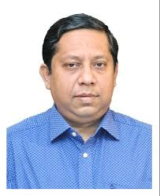
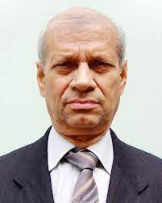

Dr. Nikhil Chandra Roy, MBBS (DMC), MD (Gastroenterology), is a highly regarded Gastroenterologist practicing in Dhanmondi, Dhaka. With a strong academic foundation and clinical expertise, he specializes in the management of digestive, liver, and pancreatic disorders. Dr. Roy is currently serving as an Assistant Professor in the Department of Gastroenterology at Bangladesh Medical College Hospital (BMCH), where he actively engages in medical teaching, research, and clinical care.
Dr. Roy's clinical interests encompass a wide range of gastroenterological conditions, including gastroesophageal reflux disease (GERD), peptic ulcer disease, inflammatory bowel disease (IBD), liver diseases such as hepatitis and cirrhosis, and pancreatic disorders. He is proficient in performing various diagnostic and therapeutic procedures, including endoscopy, colonoscopy, and liver biopsy.
Dr. Nikhil Chandra Roy is committed to providing expert, ethical, and empathetic care through both in-person and online consultations. His multi-location practice ensures greater accessibility for patients from Dhaka and beyond.
Prof. Dr. Mamun Al Mahtab Shwapnil is a Hepatologist and Gastroenterologist based in Dhaka. With an impressive educational background, including MBBS, MSc in Gastroenterology, MD in Hepatology, and prestigious international certifications like FACG (USA), FICP (India), FRCP (Ireland), and FRCP (UK), he stands as a leading authority in his field.As the Professor and Chairman of the Hepatology Department at Bangabandhu Sheikh Mujib Medical University Hospital, Dr. Shwapnil is committed to advancing the understanding and treatment of liver and gastrointestinal disorders. His dedication to patient care and research has earned him widespread recognition.
Patients seeking expert care for hepatology and gastroenterology issues can schedule appointments with Prof. Dr. Mamun Al Mahtab Shwapnil at their convenience. His wealth of experience and dedication to improving patient health make him a trusted choice in the medical field.
Prof. Dr. Mahmud Hasan is a renowned Gastroenterologist specializing in liver and pancreatic disorders, serving the Dhaka community. With a notable academic background, including MBBS, PhD (Edin), FCPS, FCPS (Pak), FRCP (Edin), and FRCP (Glasgow), he is a distinguished figure in the field of gastroenterology. As a dedicated Professor in the Department of Gastroenterology at Bangabandhu Sheikh Mujib Medical University Hospital, Dr. Hasan is committed to advancing the diagnosis and treatment of gastrointestinal diseases. His expertise and contributions to the field have earned him recognition both nationally and internationally.
Dr. Hasan’s extensive experience and dedication to gastroenterology make him a trusted choice for those seeking specialized care. Feel free to schedule an appointment to benefit from his expert guidance and medical insights.